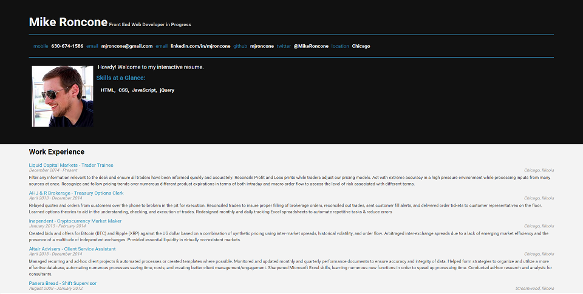
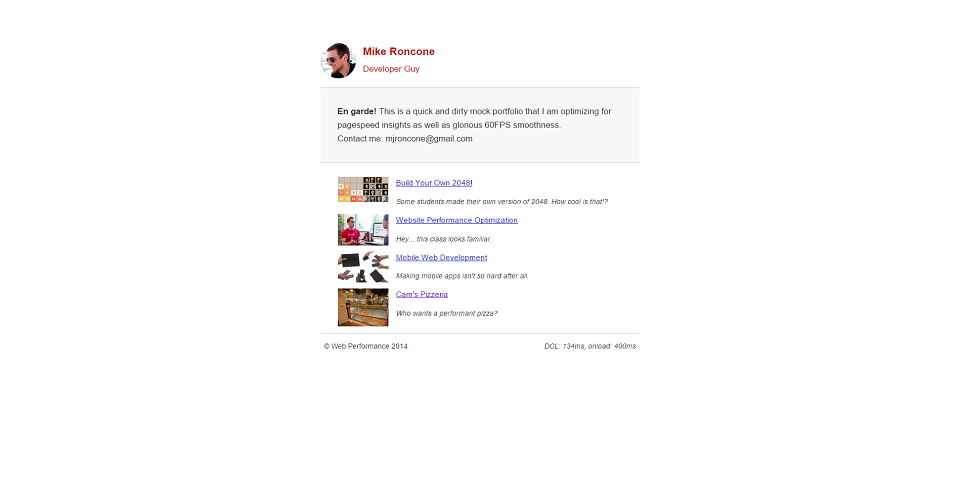
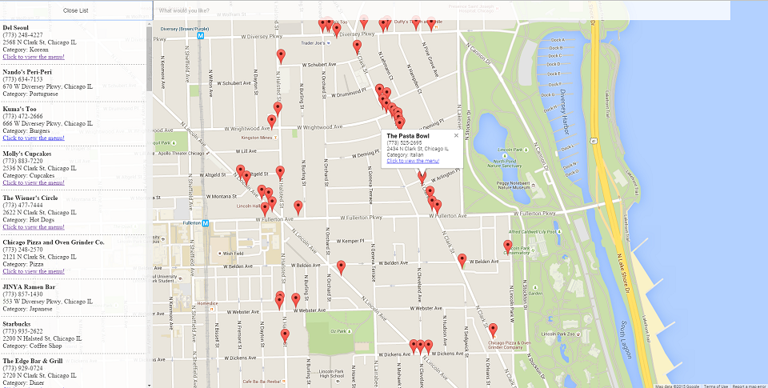

Mike Roncone
Web Developer
Featured projects:

Interactive Resume
Click here to view my interactive resume!

Performance Optimization
Click here to see an old unresponsive website that I optimized!

Neighborhood Map Project
Click here to try out the app for yourself!